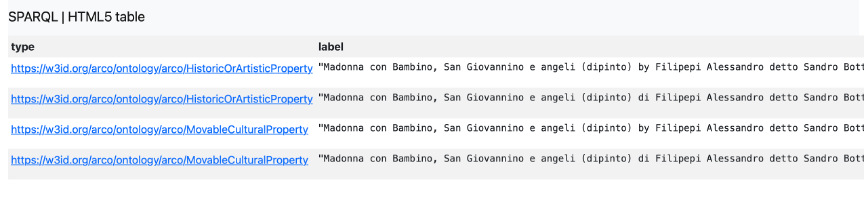
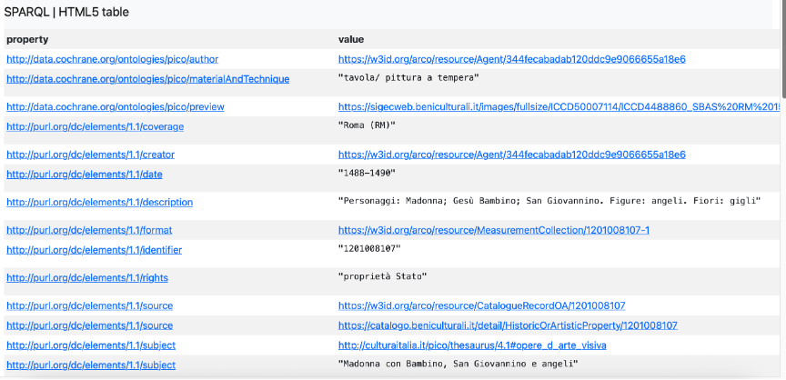
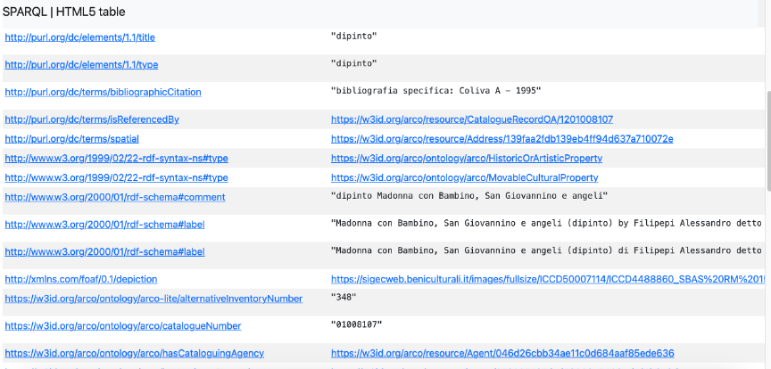
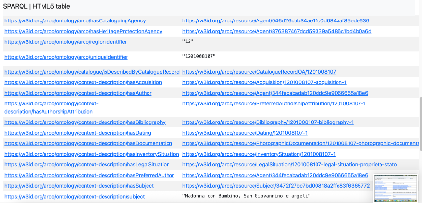
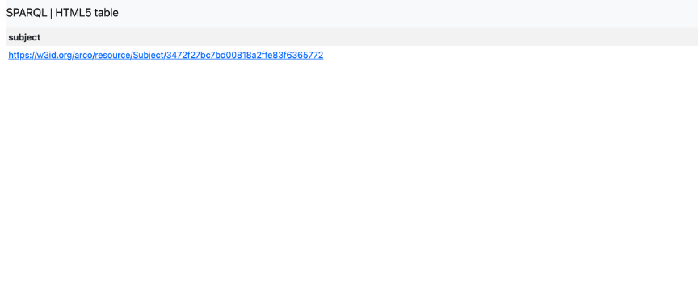
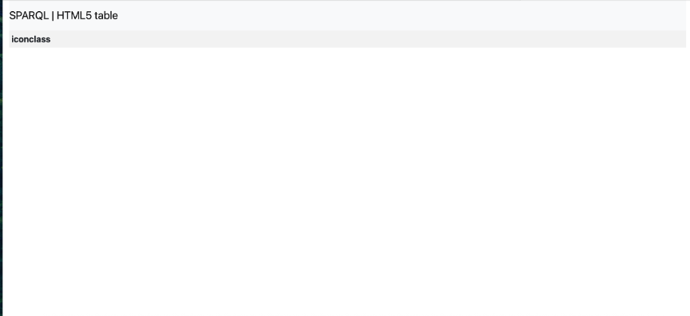
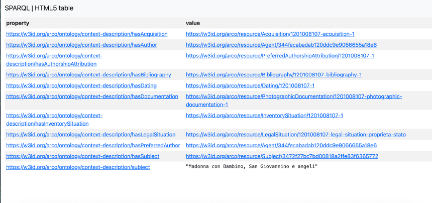
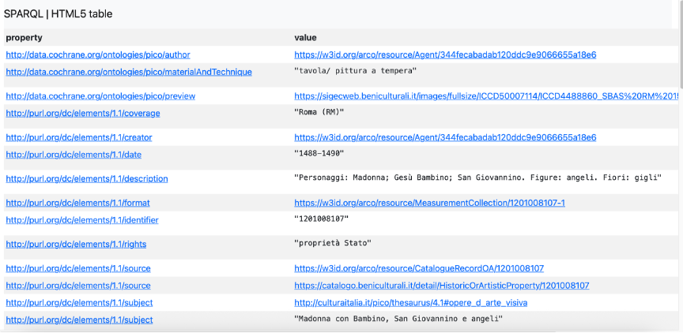
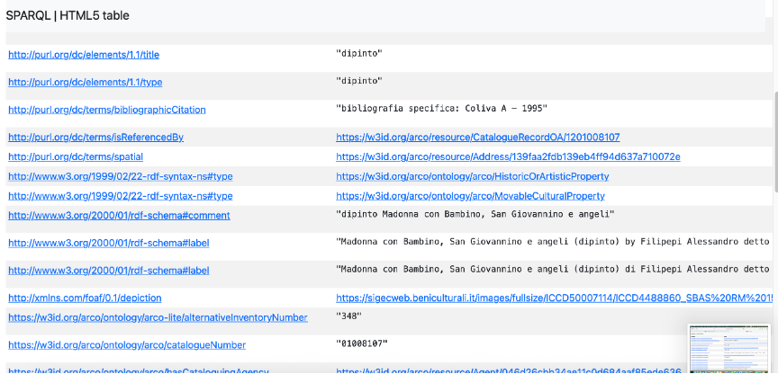

SPARQL Exploration of Madonna con Bambino, San Giovannino e angeli in the ArCo Knowledge Graph
2.1 Introduction
This chapter analyses the selected cultural property using SPARQL. The objective is to determine which information is already represented in ArCo before identifying knowledge gaps that can later be enriched using Large Language Models.
Anchor Resource
| Field | Value |
|---|---|
| Artwork | Madonna con Bambino, San Giovannino e angeli |
| Artist | Sandro Botticelli |
| Anchor URI | https://w3id.org/arco/resource/HistoricOrArtisticProperty/1201008107 |
| Knowledge Graph | ArCo |
2.2 Query 1 — Verification of the Resource
Research Question. Is the selected Anchor URI correctly represented in ArCo?
Purpose. Verify that the selected resource exists and retrieve its RDF classes.
PREFIX rdf: <http://www.w3.org/1999/02/22-rdf-syntax-ns#>
PREFIX rdfs: <http://www.w3.org/2000/01/rdf-schema#>
SELECT DISTINCT ?type ?label
WHERE {
VALUES ?cp { <https://w3id.org/arco/resource/HistoricOrArtisticProperty/1201008107> }
?cp rdf:type ?type .
OPTIONAL { ?cp rdfs:label ?label }
}
ORDER BY ?type

Results. The query returns the RDF classes HistoricOrArtisticProperty and MovableCulturalProperty.
Interpretation. The selected URI is valid and identifies the intended cultural property. The query confirms that all subsequent analyses refer to the same resource.
Conclusion. The Anchor URI is verified and can be used throughout the project.
2.3 Query 2 — Complete RDF Description
Research Question. Which RDF properties describe the selected artwork?
Purpose. Retrieve all predicates associated with the resource to analyse the available metadata.
SELECT DISTINCT ?property ?value
WHERE {
VALUES ?cp { <https://w3id.org/arco/resource/HistoricOrArtisticProperty/1201008107> }
?cp ?property ?value .
}
ORDER BY ?property



Results. Returned metadata include authorship, dating, dimensions, materials, techniques, bibliography, documentation, descriptions, subject, identifiers, legal information and images.
Interpretation. The RDF graph already contains comprehensive cataloguing metadata. The description explicitly mentions the represented figures, therefore represented figures are not a knowledge gap. The graph is rich in administrative information but still needs to be evaluated for higher-level semantic interpretation.
Conclusion. Administrative and descriptive metadata are well represented; the next queries focus on semantic context.
2.4 Intermediate Summary
At this stage the exploration confirms that the selected artwork is well described from a cataloguing perspective. The following metadata are already available: author, dating, measurements, material, technique, documentation, bibliography, description, subject and image references. Therefore, subsequent queries concentrate on semantic interpretation rather than basic metadata.
2.5 Query 3 — Verification of Subject Information
Research Question. Does the artwork already contain structured subject information?
Purpose. Determine whether the represented subject is explicitly encoded in the knowledge graph.
PREFIX a-cd: <https://w3id.org/arco/ontology/context-description/>
SELECT ?subject
WHERE {
VALUES ?cp { <https://w3id.org/arco/resource/HistoricOrArtisticProperty/1201008107> }
OPTIONAL {
?cp a-cd:hasSubject ?subject .
}
}

Results. The query returned a subject resource linked to the selected painting.
Interpretation. The result demonstrates that ArCo already contains structured subject information. Together with the textual description retrieved in Query 2, this confirms that the represented figures are already documented in the knowledge graph.
Conclusion. Subject identification is not a knowledge gap and does not require semantic enrichment.
2.6 Query 4 — Verification of Iconographic Classification
Research Question. Does the selected artwork contain an Iconclass classification?
Purpose. Verify whether the artwork is connected to a structured iconographic classification.
PREFIX a-cd: <https://w3id.org/arco/ontology/context-description/>
SELECT ?iconclass
WHERE {
VALUES ?cp { <https://w3id.org/arco/resource/HistoricOrArtisticProperty/1201008107> }
OPTIONAL {
?cp a-cd:iconclassCode ?iconclass .
}
}

Results. No Iconclass value was returned by the endpoint.
Interpretation. The absence of an Iconclass classification is the first evidence-based semantic gap identified during the exploration. While the artwork is described through cataloguing metadata and a textual description, it is not linked to a controlled iconographic vocabulary.
Conclusion. The missing Iconclass classification becomes the first confirmed candidate for semantic enrichment.
2.7 Evidence-based Assessment
Queries 1–4 show that ArCo provides extensive cataloguing metadata but not every semantic layer is represented. The artwork already has author, dating, measurements, materials, documentation, subject and description. However, no Iconclass classification was retrieved.
| Semantic Aspect | Evidence | Present | Knowledge Gap |
|---|---|---|---|
| Subject | Q3 | Yes | No |
| Represented figures | Q2 description + Q3 | Yes | No |
| Iconclass | Q4 | No | Yes |
| Structured iconographic classification | Q4 | No | Yes |
The next part investigates broader contextual knowledge and validates additional semantic gaps before preparing the LLM enrichment stage.
2.8 Query 5 — Exploration of Contextual Metadata
Research Question. Which contextual properties are available for the selected artwork?
Purpose. Inspect contextual metadata in order to compare descriptive metadata with interpretative metadata.
PREFIX a-cd: <https://w3id.org/arco/ontology/context-description/>
SELECT DISTINCT ?property ?value
WHERE {
VALUES ?cp { <https://w3id.org/arco/resource/HistoricOrArtisticProperty/1201008107> }
?cp ?property ?value .
FILTER(CONTAINS(STR(?property), "context-description"))
}
ORDER BY ?property

Results. The query retrieves only a limited number of contextual properties compared with the complete RDF description.
Interpretation. The exploration shows that ArCo focuses primarily on cataloguing information. Contextual interpretation is represented only partially and lacks richer semantic descriptions such as symbolism or theological interpretation.
Conclusion. Contextual metadata exist but remain limited in comparison with administrative metadata.
2.9 Query 6 — Validation of Semantic Gaps
Research Question. Which semantic interpretations are not explicitly represented in the knowledge graph?
Purpose. Validate the candidate knowledge gaps identified during the previous queries.
PREFIX rdf: <http://www.w3.org/1999/02/22-rdf-syntax-ns#>
PREFIX rdfs: <http://www.w3.org/2000/01/rdf-schema#>
SELECT DISTINCT ?property ?value
WHERE {
<https://w3id.org/arco/resource/HistoricOrArtisticProperty/1201008107> ?property ?value .
}
ORDER BY ?property


Results. The query retrieves the complete RDF description of the selected cultural property. The returned metadata include authorship, dating, material and technique, catalogue identifiers, documentation, measurements, legal status and represented subjects.
The inspection confirms that no explicit RDF properties describe iconographic classification, symbolic interpretation, theological meaning, Renaissance Humanism or broader historical and cultural context.
The inspection of the complete RDF description confirms that the identified semantic concepts are not explicitly encoded as structured RDF properties. This finding does not indicate incomplete cataloguing but reflects the scope of the ArCo ontology, which prioritises administrative and descriptive metadata over detailed art-historical interpretation. Consequently, the absence of these concepts represents genuine semantic knowledge gaps suitable for semantic enrichment.
Conclusion. The complete RDF inspection confirms that several important semantic concepts expected in an art-historical description are not explicitly represented in the current Knowledge Graph. These confirmed knowledge gaps define the scope of the next project stage, where validated semantic information generated through Large Language Models will be transformed into RDF triples for Knowledge Graph enrichment.
2.10 Confirmed Knowledge Gaps Identified through SPARQL Exploration
| Semantic Aspect | Evidence | Status in ArCo | Enrichment Needed | Next Stage |
|---|---|---|---|---|
| Author | Q2 | Present | No | — |
| Dating | Q2 | Present | No | — |
| Material & Technique | Q2 | Present | No | — |
| Subject | Q3 | Present | No | — |
| Represented Figures | Q2/Q3 | Present | No | — |
| Iconclass | Q4 | Missing | Yes | LLM + RDF |
| Symbolic Interpretation | Q5/Q6 | Missing | Yes | LLM + RDF |
| Theological Interpretation | Q5/Q6 | Missing | Yes | LLM + RDF |
| Renaissance Context | Q5/Q6 | Missing | Yes | LLM + RDF |
2.11 Preliminary Conclusions
The SPARQL exploration demonstrates that ArCo already provides comprehensive administrative and descriptive metadata for the selected artwork. However, higher-level semantic interpretation remains limited. The confirmed gaps identified in this chapter will guide the next stage of the project, where multiple Large Language Models will be used to generate additional contextual knowledge. Only validated information will later be converted into RDF triples suitable for enriching the ArCo Knowledge Graph.